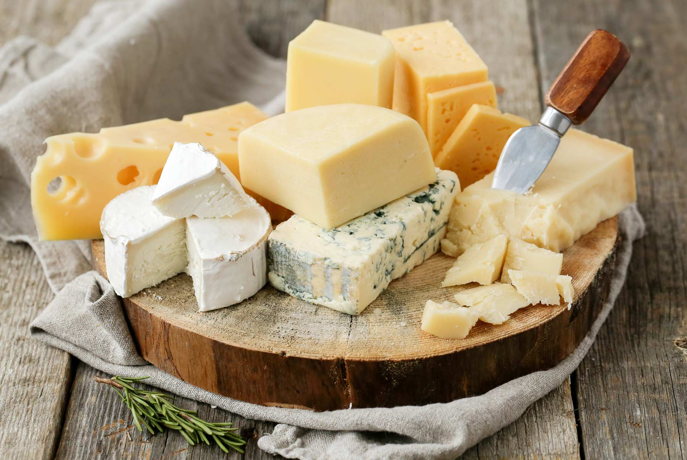

Recipes

Description
This is a recipe on how to make cheese from scratch. Even though this may be overwhelming,
but you definitley do not need to be a farmer or have a factory to produce one for yourself.
Nonetheless, it is essentially true that farmers make the best of authentic cheese products,
particularly beacuse they have the resources at their disposal and their environment is almost perfect for making organic cheese.
Non-farmers can adjust to make the best of homemade cheese.
Ingredients
- 1 gallon whole milk
- 1/4 cup of white vinegar
- 1 tablespoon of salt
Steps
- Gather all Ingredients
- Heat milk in a large pot until the temperature reaches 90 degrees C.
- Stir constantly to prevent scorching on the bottom.
- Remove from the heat, immediately pour the vinegar and stir.
- Wait up to 10 minutes
- Line a mesh strainer with cheesecloth and set over a large bowl.
- Stir salt into milk; pour through the prepared strainer. Let curds strain for 1 hour.
The milk should separate into a white solid part and a yellowish liquid (whey). Discard the whey
- Pat cheese into a ball and remove the cheesecloth.
- Wrap in plastic and store in the refrigerator until ready to use.
Fresh cheese will usually last about 1 week.